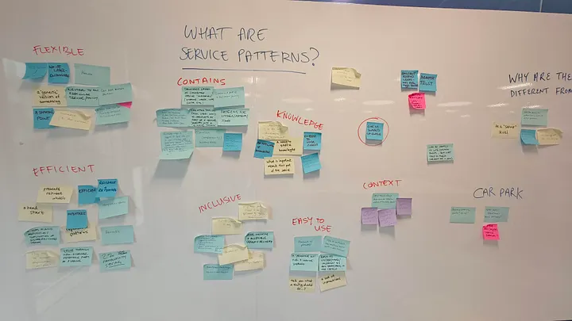

Welcome to my attempt to document our work to date on service patterns in the NHS. Time is fast flowing and it’s going to be important to do this before we move onto our next step.
Making a start
Over the years, there has been several attempts to get started with service patterns in the NHS, but these attempts — for whatever reasons — have not often gone far.
Part of this is due to a question we continue to grapple with now: is it possible to do? And if it’s possible, is it worthwhile? The amount of work it would take to put together one pattern that works in multiple places is daunting, given the variety and sheer size of the NHS.
In the last year, service patterns have got a renewed focus across the public sector. A cross-gov group was set up to talk about it, and various departments began sharing their work.
That prompted renewed conversations in the NHS about whether we should be trying to create some of our own. I asked some questions in our design leads group (featuring design leads from across the NHS) and was paired with Tom Morgan, who had started doing some thinking in his area (electronic referrals) to see where we might take it.
Baby steps
We spoke to several of the departments that had started on this journey, who were generous with their time and thoughts. We concluded a few things:
- The best way to start would be small, getting together a pattern or two and stress-testing it
- Don’t go too deep too soon. I.e. don’t develop a pattern to the nth degree before working out whether the concept will work generally
- Keep the patterns you do try simple to start with and accept they will change frequently
- Try and define who the users of the patterns are and involve them where appropriate
So now we had a sense of where to start, our next step was to get together...
As I write this it occurs to me that it shouldn’t be difficult to get people together. The problem is that this isn’t anyone’s job, and we’re based all over the place. I put a call out to find out who was keen to join a small group working, established where the best location would be, and then put in a meeting far in advance — about eight weeks.
Initial workshop
That first workshop in Leeds was great. Or ‘reet’, if you like. Tom and I worked up an agenda that looked like this:
- Introductions and scene setting. What we’re trying to do (i.e. get on the same page). Joe and Tom. 15 mins
- The aims of the day and of the work.
- Any ground rules and intros
- What are service patterns? Post-it exercise. Who might use them? What do they do? What do they contain? Joe. 60 mins
- What have you done so far? Show and tell. Each area spends a bit of time talking through the thinking they’ve done to date. Comment and discuss. Joe. 60 mins
- Lunch. 60 mins
- Who are our users? Post-it exercise. Tom. 60 mins
- What would our users do with service patterns? Where do they fit in the process? Post-it exercise. Tom. 30 mins
- Which patterns do we take forwards and stress-test? Joe and Tom. 30 mins
- How do we approach the work over the next few months? Tom. 30 mins
As you’ll see, that was a lot to get through and we didn’t quite manage it. What we didn’t get to was the last two points. So we had a follow-up, and in the meantime, Tom put everything into a mural board and did some analysis. (I will explore this in more detail in another blog.)

Post-workshop brief/ debrief/ keep it brief
This was a few weeks later on the 20th May. We recapped what we did and got into the nitty-gritty of next steps, and who — if anyone — had capacity to take on a couple of patterns to try and flesh them out and bring them back to the group.
- It was decided that Tom would set up a way for him and Emma to collab on common elements of appointment booking w/c 1 June (building on the work he’s already done).
- Amy and Mags to make a start on identifying common elements of something like a “check eligibility” pattern.
- With the principle of all to contribute asynchronously as soon as there’s something to share from Tom/ Amy/ Mags.
We also organised ourselves a bit better. We set up a slack group and a place on sharepoint to drop our work into and share inspiration. Small thing perhaps, but you never know if it’ll get put down and when it might be picked up. Documenting things is underrated in massive orgs in my opinion.
Next steps
Where we are now is that we’ve just done our latest catch-up, on 2 July, and booked in our next in six weeks. It’s been interesting to see what progress has been made, particularly with the eligibility pattern by Amy and Magdalena.
Right now I think that even if patterns end up being nothing more than a collection of knowledge about an area (what works, what doesn’t, what you need to consider), then it could have huge benefit.
Here’s to seeing where we go next.